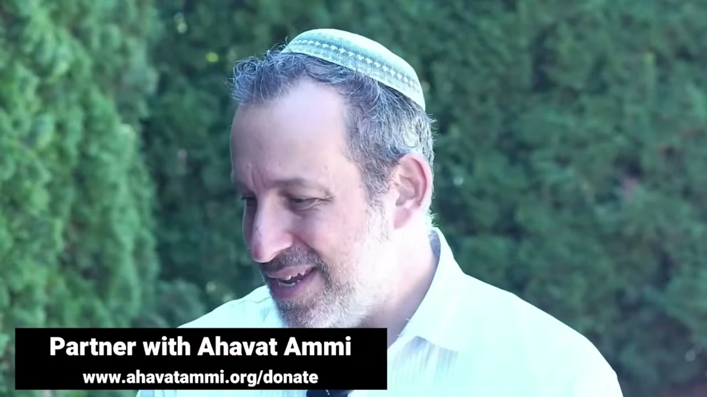

開場與歡迎 ── 全球大家庭的聚集 Opening and Welcome — A Global Family Gathers
在「拿索篇」(נָשֹׂא Naso) 的安息日，全世界的信徒——韓國、拉丁美洲、西方——以英語、韓語、西班牙語齊聲問安，組成一個全球大家庭聚集敬拜，迎接這一週的妥拉。一場跨越語言與國界的 שַׁחֲרִית (Shacharit) 晨禱，就此展開。 On the Sabbath of Naso (נָשֹׂא), believers across the world — Korea, Latin America, the West — greet one another in English, Korean, and Spanish, gathering as one global family to worship and to receive the week's Torah portion. A שַׁחֲרִית (Shacharit) morning service that crosses every language and border begins here.
每一個安息日的清晨，世界各地都有一群人同時醒來、同時面向同一位神。當「愛我民國際」(Ahavat Ammi International) 的 שַׁחֲרִית (Shacharit，「晨禱」) 直播開始時，畫面上閃過的不只是耶路撒冷或紐約的弟兄姊妹，而是韓國、拉丁美洲、歐洲、華人世界裡彼此素未謀面、卻同說一句話的人：「Shabbat Shalom——願你安息日平安。」在「拿索篇」(נָשֹׂא Naso) 這一週，這場開場與歡迎本身就是一篇講章：列國正在聚集，成為事奉以色列之神的一個大家庭。 Every Sabbath morning, all across the world, a people wakes at the same hour and turns to face the same God. When Ahavat Ammi International's שַׁחֲרִית (Shacharit, “morning prayer”) goes live, the faces on the screen are not only from Jerusalem or New York — they come from Korea, Latin America, Europe, and the Chinese-speaking world, strangers to one another yet all saying the same words: “Shabbat Shalom — peace to you on the Sabbath.” On the week of Naso (נָשֹׂא), this opening and welcome is itself a sermon: the nations are gathering into one family to serve the God of Israel.
一、多語的問安 ── 一個全球大家庭醒來I. A Multilingual Greeting — A Global Family Wakes
崇拜的開場並不是肅穆的鐘聲，而是一陣帶著喜樂、近乎隨性的歌唱與問安。一位弟兄笑著開口：「嘿，媽，我叫 Jimmy，我來自牙買加！」隨即唱起那古老的祝福：Mah Tovu...。緊接著，是英語、韓語、西班牙語此起彼落的「Shabbat Shalom」。這種看似散漫的開場，正是「愛我民」事工的標誌：敬拜不是從安靜開始，而是從聚集開始——從世界各個角落的人，把自己的語言、口音、文化都帶到同一張桌前。 The service does not open with a solemn bell but with joyful, almost spontaneous singing and greeting. One brother grins into the camera: “Hey, ma, my name's Jimmy, I come from Jamaica!” — and breaks at once into the ancient blessing, Mah Tovu…. Then come the overlapping greetings of “Shabbat Shalom” in English, Korean, and Spanish. This seemingly loose beginning is the signature of Ahavat Ammi: worship begins not with silence but with gathering — people from every corner of the earth bringing their language, accent, and culture to the same table.
這正是 קְהִלָּה (kehillah，「會眾／群體」) 的真義。希伯來文 kehillah 並不指一座建築，而是指被召聚在一起的人。當韓國的信徒、拉美的信徒、西方的信徒在清晨同時上線，他們所組成的，正是一個沒有牆、沒有國界的 kehillah——一個跨越時區、語言、與歷史傷痕的全球會眾。 This is the very meaning of קְהִלָּה (kehillah, “congregation/community”). The Hebrew kehillah never refers to a building; it means a people called together. When believers in Korea, Latin America, and the West come online at the same dawn, what they form is exactly that: a kehillah without walls or borders — a global congregation reaching across time zones, languages, and old historical wounds.
那位來自牙買加、笑著自我介紹的弟兄，正是這種精神最生動的縮影：他沒有等到「夠莊重」才開口，而是把自己的喜樂、自己的口音、自己的故鄉，毫無保留地帶進敬拜。神所召聚的會眾從來不是一群「一模一樣的人」，而是各從其語言、宗族、邦國而來的眾人（啟示錄 7:9）。開場那看似喧鬧的多語問安，其實是一幅末世的縮影圖。 The brother from Jamaica, grinning as he introduces himself, is the most vivid picture of this spirit: he does not wait until things are “solemn enough” to speak, but brings his joy, his accent, and his homeland into worship without reserve. The congregation God calls together has never been a crowd of identical people, but a multitude from every language, tribe, and nation (Revelation 7:9). The seemingly noisy, multilingual welcome at the opening is, in fact, a miniature of the last days.
二、שַׁבָּת שָׁלוֹם ── 安息日的歡迎II. Shabbat Shalom — The Welcome of the Sabbath
「שַׁבָּת שָׁלוֹם Shabbat Shalom」這句問安，字面是「安息日的平安」。沙皮拉拉比 (Rabbi Shapira) 在開場時對全世界說：「Shabbat Shalom，歡迎來到『愛我民國際』一個非常特別的安息日。」這不是客套，而是一個邀請——邀請每一位觀看的人，無論身在首爾、巴黎還是台北，都進入這一天的安息。 The greeting “שַׁבָּת שָׁלוֹם Shabbat Shalom” means, literally, “the peace of the Sabbath.” Rabbi Shapira opens by addressing the whole world: “Shabbat Shalom, and welcome to a very special Shabbat here at Ahavat Ammi International.” This is no formality but an invitation — a call to every viewer, whether in Seoul, Paris, or Taipei, to enter the rest of this day.
拉比強調一件容易被忽略的事：「每一個安息日，我們都要繼續從世界各地一同團契，並且帶著對眼前事物的極大期待來迎接安息日。」安息日不只是「停下工作」的一天，而是全球家庭重新聚首的約定。對於分散在各國、常感孤單的華人信徒而言，這句話格外有份量：你並不是一個人在守安息日——在同一個清晨，有千千萬萬人與你一同面向同一位神。 The rabbi underscores something easily missed: “Every Shabbat we continue to fellowship together from all over the world, and come to Shabbat with a great expectation of the things before us.” The Sabbath is not merely a day of “stopping work” but a standing appointment for the global family to reassemble. For Chinese believers scattered among the nations and often lonely, the words carry extra weight: you do not keep the Sabbath alone — in the same dawn, thousands upon thousands turn with you toward the same God.
三、נָשֹׂא Naso ── 本週的妥拉，本週的祝福III. Naso — This Week's Torah, This Week's Blessing
這場晨禱所迎接的，是本週的妥拉portion——「拿索篇」(נָשֹׂא Naso)。在開場的歌唱中，弟兄們已經唱出了與這一段相連的著名祝福：Mah Tovu, ohalecha Yaakov, mishkenotecha Yisrael（「雅各啊，你的帳棚何等華美；以色列啊，你的居所何等佳美！」）。這句話出自巴蘭 (Bilaam) 的口——他本想咒詛以色列，神卻使他口中只能流出祝福。 This morning service welcomes the week's Torah portion — Naso (נָשֹׂא). In the opening singing, the brothers have already sung the famous blessing tied to it: Mah Tovu, ohalecha Yaakov, mishkenotecha Yisrael (“How good are your tents, O Jacob, your dwelling places, O Israel!”). The line comes from the mouth of Balaam (Bilaam), who set out to curse Israel — yet God allowed only blessing to flow from his lips.
「他本意是要咒詛以色列，結果卻給了他們祝福。」——本段崇拜的開場宣告（民數記 22–24 巴蘭的故事） “He meant to curse Israel; he ended up blessing them instead.”— from the service's opening proclamation (the Balaam narrative, Numbers 22–24)
這個主題為整場崇拜定下基調：即使人的心意是要傷害、咒詛、拆毀，神也能把它扭轉成祝福。一個從世界各地聚集的大家庭，所領受的第一個信息正是——你以為的咒詛，在神手中可以成為祝福；你以為的失敗，可以成為神更大計劃的起點。 This theme sets the tone for the whole service: even when a human heart intends to harm, to curse, to tear down, God can turn it into blessing. The first message a globally gathered family receives is exactly this — the curse you feared can become, in God's hand, a blessing; the failure you dread can become the starting point of God's larger plan.
四、列國聚集 ── 韓國、拉美、與西方IV. The Nations Gather — Korea, Latin America, and the West
這場晨禱之所以「特別」，是因為它同時是一場全球宣教的現場直播。拉比分享：此刻事工正在韓國進行大規模的外展——剛離開首爾，正在釜山啟動第二個聚會。他也向「今天從中國觀看我們的人」致意，並提到《以東的陷落》(The Fall of Edom) 一書已進入台灣，請眾人為全球的華人餘民禱告。下一週，團隊將前往歐洲——法國巴黎、比利時、荷蘭、德國——把光帶進歐洲的心臟。 What makes this morning service “special” is that it is also a live broadcast of global mission. The rabbi shares that the ministry is in the midst of a massive outreach in Korea — having just left Seoul to launch a second fellowship in Busan. He greets “those of you watching from China today,” notes that the book The Fall of Edom has reached Taiwan, and asks everyone to pray for the Chinese remnant all over the world. The following weeks the team heads to Europe — Paris, Belgium, the Netherlands, Germany — to carry light into the heart of the continent.
於是，開場的「多語問安」不再只是氣氛，而是地圖：每一種語言背後，都是一個正在被神觸摸的民族。韓語，是釜山新聚會中的弟兄姊妹；西班牙語，是拉丁美洲的會眾；英語與華語，連結著北美、歐洲、與華人世界。列國真的在聚集——不是抽象的口號，而是一條條正在開拓的宣教路線。 So the opening “multilingual greeting” is not mere atmosphere but a map: behind every language stands a people God is touching. Korean — the brothers and sisters in the new Busan fellowship; Spanish — the congregations of Latin America; English and Chinese — binding North America, Europe, and the Chinese-speaking world. The nations really are gathering — not as an abstract slogan, but as concrete mission routes being opened one by one.
這幅圖景呼應了先知的異象：「萬民都要流歸這山……因為訓誨 (תּוֹרָה Torah) 必出於錫安，耶和華的言語必出於耶路撒冷」（以賽亞書 2:2-3）。當韓語、西班牙語、英語、華語在同一個清晨匯成一句「Shabbat Shalom」，我們所看見的，正是這個古老應許在末世的初熟果子——列國向著以色列的神聚集，要領受祂的妥拉。對於常覺得自己在邊緣、在遠方的華人信徒，這幅圖景說的是：你不是被加進來的旁觀者，而是這個應許本身的一部分。 The picture echoes the prophet's vision: “all the nations shall flow to it… for out of Zion shall go forth the Torah (תּוֹרָה), and the word of the LORD from Jerusalem” (Isaiah 2:2–3). When Korean, Spanish, English, and Chinese converge into one “Shabbat Shalom” in a single dawn, what we are watching is a firstfruit of that ancient promise in the last days — the nations gathering toward the God of Israel to receive His Torah. To Chinese believers who often feel themselves at the margins, far away, the picture says: you are not a spectator added on, but a part of the promise itself.
五、עֲבוֹדָה Avodah ── 國度的工作是一份祝福V. Avodah — The Work of the Kingdom Is a Blessing
拉比在開場中分享了一段個人見證：當天是他的五十歲生日。他說，自己用了「人生的百分之五十」在列國中做這份工作，而這一切「簡直是奇蹟、是美好、是滿了祝福」。他從一個在企業界極為成功的人，在遇見彌賽亞之後，放下追求金錢的人生，轉而追求靈魂——這就是「愛我民」與後來「Yeshiva」誕生的起點。 In his opening the rabbi shares a personal testimony: that day was his fiftieth birthday. He reflects that he has spent “fifty percent of my life” doing this work among the nations, and that it has been “nothing short of miraculous, wonderful, and full of blessing.” Once highly successful in the corporate world, after meeting the Messiah he laid down the pursuit of money to pursue souls instead — the very beginning of Ahavat Ammi, and later the Yeshiva.
他特別用一個希伯來詞來描述這份事奉：עֲבוֹדָה (Avodah)。Avodah 同時有「工作」與「敬拜／事奉」的雙重意思——在聖殿裡，祭司的「工作」就是「敬拜」。拉比說：「我們做國度的工作、做這 Avodah，這一切對我們都是極大的祝福。」對全球的這個大家庭而言，敬拜與宣教不是兩件事：聚集敬拜，本身就是事奉；事奉列國，本身就是敬拜。 He uses one Hebrew word in particular to describe this service: עֲבוֹדָה (Avodah). Avodah carries a double meaning — both “work” and “worship/service”; in the Temple, the priest's “work” was worship. The rabbi says: “Doing the work of the Kingdom, doing the Avodah — all of this is a tremendous blessing to us.” For this global family, worship and mission are not two things: to gather in worship is itself to serve; to serve the nations is itself to worship.
值得留意的是，拉比沒有把這份事奉說成「犧牲」，而是說成「祝福」。他向全球的弟兄姊妹說：「既然你們對我們是祝福，我也想感謝你們成為我的祝福。」這是一種互相的領受——支持事工的人是祝福，被差派的人也是祝福；前線的開拓者是祝福，在家守望禱告的人也是祝福。在這個全球大家庭裡，沒有人只是「資源」，每一個人都是另一個人的祝福。這正是巴蘭故事的回聲：神的心意，從始至終都是要祝福，而不是咒詛。 It is worth noting that the rabbi does not frame this service as “sacrifice” but as “blessing.” He tells the worldwide family: “As you are a blessing to us, I want to thank you for being a blessing to me.” It is a mutual receiving — those who support the work are a blessing, and those who are sent are a blessing; the pioneers on the frontline are a blessing, and those who keep watch in prayer at home are a blessing too. In this global family no one is merely a “resource”; each person is a blessing to another. This is the echo of the Balaam story: God's intent, from beginning to end, has always been to bless, and not to curse.
六、一同站立 ── 為彼此守望禱告VI. Standing Together — Watching and Praying for One Another
開場的最後，是一連串具體的代禱請求：為釜山途中那場火車事故中受影響的人禱告；為韓國的平安與保護禱告；為下週在巴黎、比利時、荷蘭、德國的外展禱告；為帶領那裡晨禱的諾亞 (Noach) 禱告；為「以色列行動」(Operation Israel) 與進入以色列國防軍的年輕人禱告。拉比坦言：「這很昂貴，這不容易，而且如今在這個世界上帶著危險。」 The opening closes with a string of concrete prayer requests: for those affected by a train accident on the road to Busan; for the safety and protection of Korea; for next week's outreach in Paris, Belgium, the Netherlands, and Germany; for Noach (Noah), who will lead the morning service there; and for Operation Israel and the young people entering the IDF. The rabbi is candid: “It is expensive. It is not easy. And it carries an element of danger in the world right now.”
這正是「全球大家庭」最真實的樣子——不只是同步上線敬拜，而是彼此承擔。一個在台北的信徒，可以為釜山的弟兄禱告；一個在拉美的會眾，可以為巴黎的開拓守望。當一個成員受苦，全家都禱告；當一個前線推進，全家都歡喜。這就是 kehillah：不是觀眾的集合，而是一個一同站立、一同跪下、一同領受祝福的身體。 This is what the “global family” truly looks like — not merely logging on to worship in sync, but bearing one another's burdens. A believer in Taipei can pray for a brother in Busan; a congregation in Latin America can keep watch over the pioneering work in Paris. When one member suffers, the whole family prays; when one frontline advances, the whole family rejoices. This is kehillah: not an assembly of spectators, but one body that stands, kneels, and receives blessing together.
七、結語 ── 帶著極大的期待VII. Closing — With Great Expectation
「每一個安息日，我們都要繼續從世界各地一同團契，並且帶著對眼前事物的極大期待來迎接安息日。我們所做的國度工作、這 Avodah——這一切都是極大的祝福。Shabbat Shalom。」 “Every Shabbat, we continue to fellowship together from all over the world, and come to Shabbat with a great expectation of the things before us. The work of the Kingdom, this Avodah — all of it is a tremendous blessing. Shabbat Shalom.”